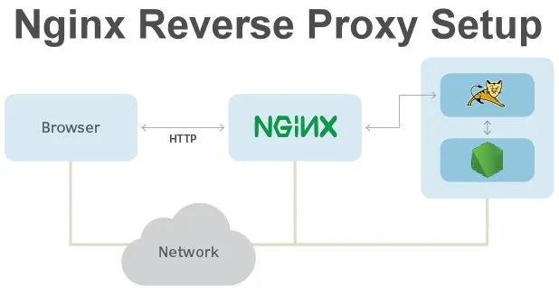
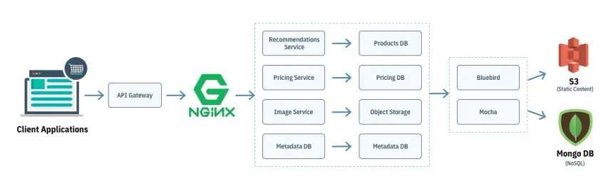

Docker is a platform that enables developers to automate the deployment, scaling, and management of applications inside lightweight, portable containers. Containers package up the application and its dependencies, ensuring that it runs consistently across different environments. Docker simplifies the development process by providing a consistent environment from development to production.
Docker
Node.js
Node.js is an open-source, cross-platform JavaScript runtime environment that allows developers to build server-side and networking applications. It uses an event-driven, non-blocking I/O model, making it lightweight and efficient. Node.js is particularly well-suited for real-time applications, such as chat servers, APIs, and streaming services, due to its ability to handle multiple connections simultaneously.

Nginx
Nginx is a high-performance web server, reverse proxy, and load balancer. It is known for its stability, rich feature set, and low resource consumption. Nginx is often used to serve static content, act as a reverse proxy for dynamic content, and load balance traffic across multiple servers. Its asynchronous architecture allows it to handle a large number of concurrent connections efficiently, making it a popular choice for high-traffic websites.
